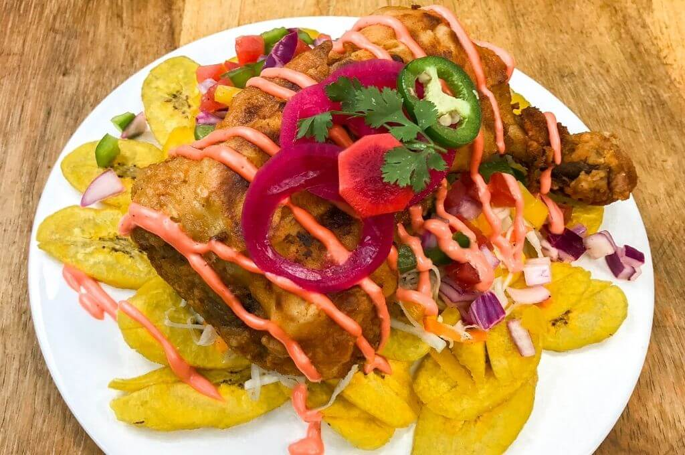

A typical Honduran dish that can be found throughout the country. It consists of deep fried chicken, deep fried plantains accompanied by a salad and a special home-made sauce. Avocado and onions soaked in vinegar gives the dish an exquisite flavor. Grab a drink and enjoy the day as you feast on this delicious home-made platter.